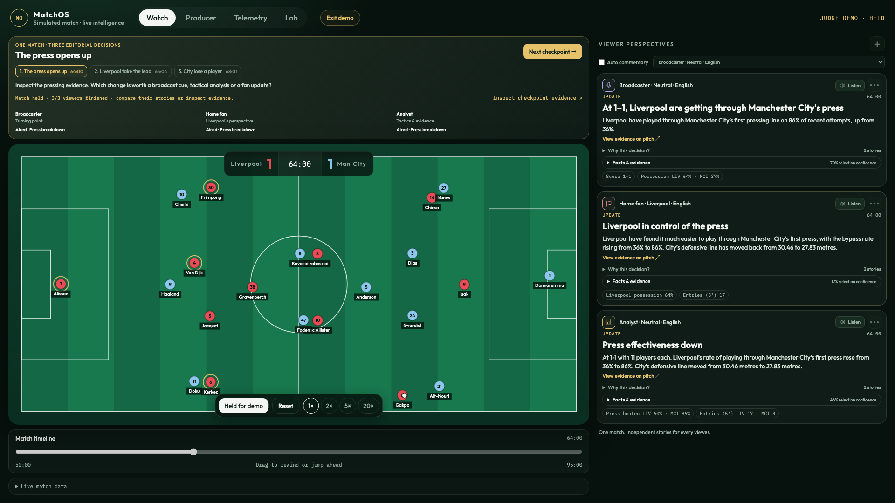

<template>
  <div data-hf-id="hf-mcm2" id="beat-2" class="film-scene" data-composition-id="beat-2" data-start="0" data-duration="24.45" data-width="1920" data-height="1080">
    <div data-hf-id="hf-ds88" id="b2-pitch" class="pitch-decor" data-layout-ignore></div>
    <div data-hf-id="hf-x12s" class="scene-content b2-content">
      <div data-hf-id="hf-8sn0" id="b2-top" class="brand-row">
        
        <span data-hf-id="hf-6d2g" class="b2-status">ACTUAL GENERATED OUTPUT <span data-hf-id="hf-1bmq">·</span> 64:00</span>
      </div>
      <div data-hf-id="hf-piru" id="b2-heading" class="b2-heading">
        <h2 data-hf-id="hf-70d8">One moment. Three perspectives.</h2>
        <span data-hf-id="hf-8ul1" class="b2-event">PRESS_BREAKDOWN</span>
      </div>
      <div data-hf-id="hf-vn1e" id="b2-evidence" class="b2-evidence">
        <div data-hf-id="hf-7woo" class="b2-evidence-copy"><span data-hf-id="hf-3y72" class="b2-evidence-label">SHARED EVIDENCE</span><span data-hf-id="hf-a9kr" class="b2-evidence-description">Liverpool playing through City's first press</span></div>
        <div data-hf-id="hf-omlg" id="b2-metric" class="b2-metric"><span data-hf-id="hf-gden">36%</span><span data-hf-id="hf-zg8x" class="b2-arrow">→</span><strong data-hf-id="hf-3sfz">86%</strong></div>
        <div data-hf-id="hf-om4l" class="b2-line b2-left-line" data-layout-ignore></div>
        <div data-hf-id="hf-np25" class="b2-line b2-center-line" data-layout-ignore></div>
        <div data-hf-id="hf-8jiu" class="b2-line b2-right-line" data-layout-ignore></div>
      </div>
      <div data-hf-id="hf-tksu" class="b2-cards" data-hold="Deliberate reading hold after the three persona reveals">
        <article data-hf-id="hf-eyiu" id="b2-broadcaster" class="b2-card b2-broadcaster">
          <div data-hf-id="hf-4vsq" id="b2-broadcaster-inner" class="b2-card-inner">
            <div data-hf-id="hf-6et1" class="b2-role"><span data-hf-id="hf-8riv">Broadcaster</span><span data-hf-id="hf-p3ra" class="b2-angle">NEUTRAL</span></div>
            <div data-hf-id="hf-esb4" id="b2-broadcaster-rule" class="b2-role-rule"></div>
            <h3 data-hf-id="hf-jl2b">At 1–1, Liverpool are getting through Manchester City's press</h3>
            <p data-hf-id="hf-vey0">Liverpool have played through Manchester City’s first pressing line on 86% of recent attempts, up from 36%.</p>
          </div>
        </article>
        <article data-hf-id="hf-uqk2" id="b2-fan" class="b2-card b2-fan">
          <div data-hf-id="hf-esr5" id="b2-fan-inner" class="b2-card-inner">
            <div data-hf-id="hf-df3d" class="b2-role"><span data-hf-id="hf-l8do">Liverpool fan</span><span data-hf-id="hf-hhrb" class="b2-angle">CLUB</span></div>
            <div data-hf-id="hf-q2md" id="b2-fan-rule" class="b2-role-rule"></div>
            <h3 data-hf-id="hf-opxx">Liverpool in control of the press</h3>
            <p data-hf-id="hf-ol2v">Liverpool have found it much easier to play through Manchester City’s first press, with the bypass rate rising from 36% to 86%…</p>
          </div>
        </article>
        <article data-hf-id="hf-vg6y" id="b2-analyst" class="b2-card b2-analyst">
          <div data-hf-id="hf-h81s" id="b2-analyst-inner" class="b2-card-inner">
            <div data-hf-id="hf-em0g" class="b2-role"><span data-hf-id="hf-jmml">Analyst</span><span data-hf-id="hf-xxa8" class="b2-angle">TACTICS</span></div>
            <div data-hf-id="hf-075e" id="b2-analyst-rule" class="b2-role-rule"></div>
            <h3 data-hf-id="hf-e9vv">Press effectiveness down</h3>
            <p data-hf-id="hf-4h36">…City’s defensive line moved from 30.46 metres to 27.83 metres.</p>
          </div>
        </article>
      </div>
      <div data-hf-id="hf-fiaa" id="b2-footer" class="b2-footer">
        <div data-hf-id="hf-x1mp" class="b2-proof"><div data-hf-id="hf-yeow"><span data-hf-id="hf-k61a" class="b2-proof-label">FROM THE AZURE APP</span><span data-hf-id="hf-yunf" class="b2-proof-description">Simulated match · real model output</span></div></div>
        <div data-hf-id="hf-axl2" id="b2-choice" class="b2-choice"><span data-hf-id="hf-f139" class="b2-choice-dot"></span><span data-hf-id="hf-48p2">Independent editorial choice. Including the choice to hold.</span></div>
      </div>
    </div>
    <style>
      #beat-2{font-family:Outfit,sans-serif;color:#f3f6f2;background:#07110d}
      #b2-pitch,#b2-top,#b2-heading,#b2-evidence,#b2-broadcaster,#b2-fan,#b2-analyst,#b2-footer,#b2-choice{opacity:0}
      #beat-2 .b2-content{padding:54px 76px 54px;gap:20px}
      #beat-2 .b2-brand{display:block;width:219px;height:46px;object-fit:contain;object-position:left center}
      #beat-2 .b2-status{font:20px 'IBM Plex Mono',monospace;color:#9aafa4;letter-spacing:.04em}
      #beat-2 .b2-status span{color:#e6c36a;padding:0 13px}
      #beat-2 .b2-heading{display:flex;align-items:flex-end;justify-content:space-between;gap:26px;min-height:92px;padding-bottom:8px}
      #beat-2 h2{font-size:70px;font-weight:750;line-height:1.04;letter-spacing:-.035em;margin:0}
      #beat-2 .b2-event{font:20px 'IBM Plex Mono',monospace;color:#e6c36a;letter-spacing:.03em;padding-bottom:7px}
      #beat-2 .b2-evidence{position:relative;display:flex;align-items:center;justify-content:space-between;gap:40px;padding:17px 30px;border:1px solid #365046;background:#0c1914;border-radius:20px;min-height:103px}
      #beat-2 .b2-evidence-copy{display:flex;align-items:center;gap:28px}
      #beat-2 .b2-evidence-label{font:19px 'IBM Plex Mono',monospace;letter-spacing:.04em;color:#e6c36a}
      #beat-2 .b2-evidence-description{font-size:28px;font-weight:350;color:#f3f6f2}
      #beat-2 .b2-metric{display:flex;align-items:center;gap:20px;font:46px 'IBM Plex Mono',monospace;font-variant-numeric:tabular-nums;white-space:nowrap}
      #beat-2 .b2-metric strong{font-weight:500;color:#e6c36a}
      #beat-2 .b2-arrow{font-family:Outfit,sans-serif;font-weight:300;color:#9aafa4}
      #beat-2 .b2-line{position:absolute;width:1px;height:20px;background:#e6c36a;bottom:-21px;transform-origin:top center;opacity:.65}
      #beat-2 .b2-left-line{left:16.2%}#beat-2 .b2-center-line{left:50%}#beat-2 .b2-right-line{right:16.2%}
      #beat-2 .b2-cards{display:grid;grid-template-columns:repeat(3,minmax(0,1fr));gap:24px;height:514px;flex-shrink:0}
      #beat-2 .b2-card{border:1px solid #365046;border-radius:24px;background:#101c17;overflow:hidden}
      #beat-2 .b2-card-inner{height:100%;padding:30px 30px 32px;display:flex;flex-direction:column}
      #beat-2 .b2-broadcaster{--role:#bc9be8}#beat-2 .b2-fan{--role:#e94c55}#beat-2 .b2-analyst{--role:#e6c36a}
      #beat-2 .b2-role{display:flex;align-items:center;gap:13px;min-height:38px;font-size:27px;font-weight:600;color:var(--role);white-space:nowrap}
      #beat-2 .b2-role img{width:34px;height:34px;object-fit:contain}
      #beat-2 .b2-angle{margin-left:auto;font:17px 'IBM Plex Mono',monospace;letter-spacing:.035em;color:var(--role);opacity:.96}
      #beat-2 .b2-role-rule{height:2px;background:var(--role);width:100%;margin:24px 0 25px;transform-origin:left center}
      #beat-2 h3{font-size:36px;font-weight:700;line-height:1.17;letter-spacing:-.018em;margin:0 0 24px;min-height:126px}
      #beat-2 .b2-card p{font-size:28px;font-weight:350;line-height:1.31;margin:0;color:#f3f6f2}
      #beat-2 .b2-footer{display:flex;align-items:center;justify-content:space-between;gap:30px;margin-top:auto;min-height:92px}
      #beat-2 .b2-proof{display:flex;align-items:center;gap:22px}
      #beat-2 .b2-proof>img{width:150px;height:84px;object-fit:cover;object-position:center;border-radius:9px;border:1px solid #365046}
      #beat-2 .b2-proof>div{display:flex;flex-direction:column;gap:8px}
      #beat-2 .b2-proof-label{font:18px 'IBM Plex Mono',monospace;letter-spacing:.045em;color:#9aafa4}
      #beat-2 .b2-proof-description{font-size:24px;font-weight:350;color:#9aafa4}
      #beat-2 .b2-choice{display:flex;align-items:center;gap:16px;max-width:615px;font-size:27px;line-height:1.25;font-weight:400;color:#f3f6f2}
      #beat-2 .b2-choice-dot{width:9px;height:9px;background:#e6c36a;border-radius:50%;flex-shrink:0}
    </style>
    <script>
      (function(){
        const tl = gsap.timeline({paused:true});
        const enter = (selector, from, to, at) => tl.fromTo(selector, from, {...to, immediateRender:false}, at);
        enter('#b2-pitch',{opacity:0},{opacity:.5,duration:1.1,ease:'sine.out'},.12);
        enter('#b2-top',{opacity:0,y:-14},{opacity:1,y:0,duration:.6,ease:'power2.out'},.16);
        enter('#b2-heading',{opacity:0,x:-34},{opacity:1,x:0,duration:.78,ease:'expo.out'},.24);
        enter('#b2-evidence',{opacity:0,y:18},{opacity:1,y:0,duration:.65,ease:'power3.out'},.45);
        enter('#b2-broadcaster',{opacity:0,x:-24},{opacity:1,x:0,duration:.72,ease:'power3.out'},.8);
        enter('#b2-broadcaster-rule',{scaleX:0},{scaleX:1,duration:.7,ease:'sine.out'},1.1);
        enter('#b2-fan',{opacity:0,y:24},{opacity:1,y:0,duration:.65,ease:'expo.out'},6.0);
        enter('#b2-fan-rule',{scaleX:0},{scaleX:1,duration:.6,ease:'power2.out'},6.25);
        enter('#b2-analyst',{opacity:0,x:26},{opacity:1,x:0,duration:.8,ease:'power2.out'},11.0);
        enter('#b2-analyst-rule',{scaleX:0},{scaleX:1,duration:.75,ease:'sine.out'},11.25);
        enter('.b2-line',{scaleY:0},{scaleY:1,duration:.6,ease:'power3.out'},11.75);
        enter('#b2-footer',{opacity:0,y:14},{opacity:1,y:0,duration:.8,ease:'sine.out'},1.55);
        enter('#b2-choice',{opacity:0,x:12},{opacity:1,x:0,duration:.65,ease:'power3.out'},16.7);
        tl.to('#b2-broadcaster-inner',{y:-4,duration:.55,ease:'sine.inOut',yoyo:true,repeat:1},2.7);
        tl.to('#b2-fan-inner',{y:-4,duration:.55,ease:'sine.inOut',yoyo:true,repeat:1},7.7);
        tl.to('#b2-analyst-inner',{y:-4,duration:.55,ease:'sine.inOut',yoyo:true,repeat:1},12.4);
        tl.to('#b2-metric',{y:-3,duration:.6,ease:'sine.inOut',yoyo:true,repeat:1},14.5);
        window.__timelines = window.__timelines || {};
        window.__timelines['beat-2'] = tl;
      })();
    </script>
  </div>
</template>
